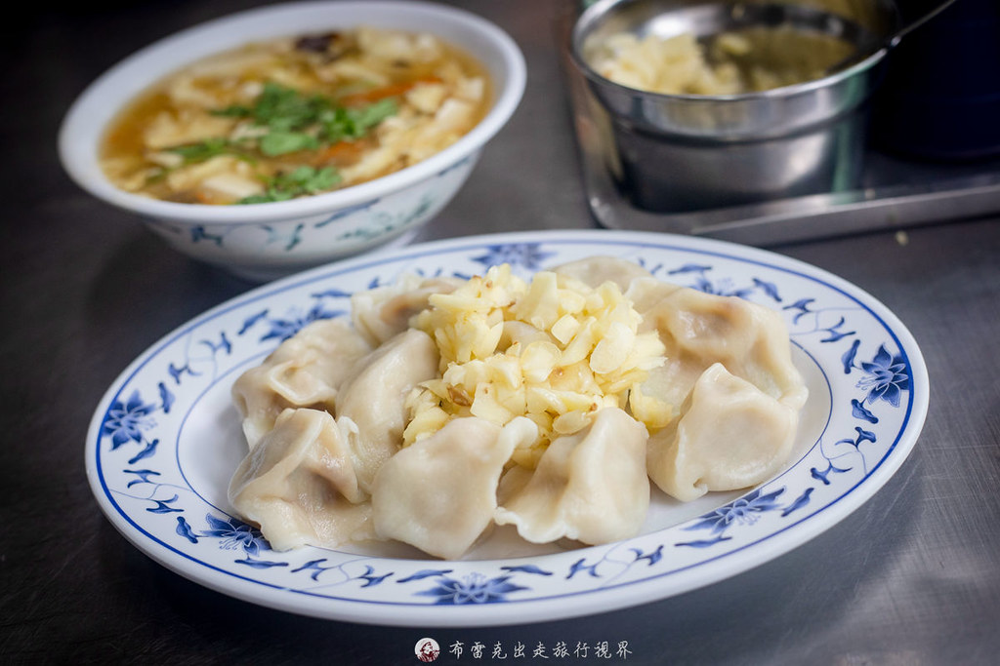

宜蘭南塘水餃｜東門夜市旁手工水餃、蒜蓉自由加與酸辣湯小吃備忘
來源：布雷克的出走旅行視界《南塘水餃｜宜蘭在地老字號推薦，蒜蓉隨你加手工包製水餃一顆才賣6元》。本文把食記整理成可直接加入宜蘭小吃清單的備忘。

一句話摘要
南塘水餃是宜蘭市東門夜市附近的在地老字號小吃，主打手工水餃、酸辣湯與「新鮮蒜蓉自由加」。如果行程會到宜蘭火車站、東門夜市或宜蘭市區，適合排成一餐簡單、便宜、有在地感的水餃點。
店家資訊
| 項目 | 內容 |
|---|---|
| 店名 | 南塘水餃 / 南塘水餃館 |
| 類型 | 台式小吃、手工水餃、酸辣湯 |
| 地址 | 宜蘭縣宜蘭市東門里崇聖街 78 號 |
| 交通 | 距宜蘭火車站步行約 10 分鐘，近東門夜市；開車可找附近路邊停車格 |
| 電話 | 03-936-2091（部分舊食記亦見 03-935-8526，出發前建議以 Google Maps 或電話確認） |
| 營業時間 | 10:30–20:00，週一公休 |
| 特色 | 老字號、手工包製、蒜蓉自由加、菜單簡單、酸辣湯搭配水餃 |
| Google Maps | https://www.google.com/maps/search/?api=1&query=南塘水餃%20宜蘭縣宜蘭市崇聖街78號 |
菜單與推薦
| 品項 | 價格 | 食記重點 | 欒帥建議 |
|---|---:|---|---|
| 熟水餃 | 6 元 / 顆 | 手工包製、白胖厚實，水餃皮帶韌度，不是軟爛型 | 必點。第一次可點 10–15 顆，搭配蒜蓉醬油醋 |
| 生水餃 | 20 粒 110 元 | 可外帶回家煮 | 若剛好開車或回住宿有冷藏，可列入外帶選項 |
| 酸辣湯小碗 | 40 元 | 勾芡不重，豆腐、木耳、紅蘿蔔絲、蛋花等配料足 | 建議搭配水餃；不想太飽點小碗即可 |
| 酸辣湯中碗 | 60 元 | 適合 2 人分食 | 兩人同行可點中碗一起配 |
| 酸辣湯大碗 | 80 元 | 適合多人分食 | 家庭或多人小吃路線可點 |
口味判斷
### 1. 蒜蓉是靈魂
布雷克食記最強調的是新鮮蒜蓉自由加。封面圖可見一盤水餃中央鋪滿切碎蒜蓉，後方是一碗酸辣湯；這也符合多篇搜尋結果對南塘水餃的共同印象：水餃本體之外，醬油、烏醋與大量蒜蓉會把味道拉到更重、更爽快的台式小吃路線。
### 2. 水餃走厚實手工路線
食記描述水餃皮較有韌度，麵皮香氣明顯，不是軟爛薄皮派。若喜歡厚皮、油蔥/蝦米香、重醬料與蒜味，會比較對味；若偏好精緻薄皮或清爽餃子，期待要調整。
### 3. 酸辣湯是標準搭配
酸辣湯小碗 40 元，食記描述勾芡不重、配料足，與蒜香水餃一起吃是最穩組合。這間適合「水餃 + 酸辣湯」簡單收斂，不需要期待複雜菜單。
路線搭配
- 宜蘭火車站 → 南塘水餃 → 東門夜市：適合市區散步小吃線。
- 宜蘭市辦事 / 停留 → 南塘水餃午餐：菜單簡單、用餐節奏快。
- 東門夜市前墊胃：先吃水餃與酸辣湯，再去夜市補其他小吃。
- 宜蘭水餃比較：可與天天來水餃分開比較；布雷克提到兩者曾有兄弟店/親緣脈絡，但現在獨立經營，各有特色。
判讀限制
- 價格與營業時間以布雷克 2026-07-28 食記與 Brave Search 搜尋結果交叉整理為準；出發前仍建議查 Google Maps 或致電確認。
- OpenStreetMap/Nominatim 未能直接定位此地址，因此本文提供 Google Maps 搜尋連結而非固定經緯度。
- 水餃口味偏傳統厚實與蒜味路線；不吃蒜或怕重口味者可少加蒜蓉。
- 店面是傳統小吃店氛圍，不是久坐型餐廳；尖峰時段可能要等候或考慮外帶。
相關連結
- 布雷克原文：https://blake.com.tw/blog/post/nan-tang-shuijiao
- JUN 享樂誌搜尋結果/食記：https://hedonistjun.com/nantang-dumplings/
- 走著走著就吃了店家資訊：https://blog.pklife.tw/2024/06/yilan-nan-tang.html
- 菲菲吳小姐食記：https://ffwlife.tw/post-120771030/
- Google Maps 搜尋：https://www.google.com/maps/search/?api=1&query=南塘水餃%20宜蘭縣宜蘭市崇聖街78號